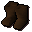
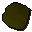
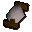
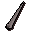
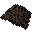

Leather boots

| Config name | leather_boots |
| Item id | 1061 |
| Value | 6 gp |
| Weight | 12oz |
| Members | No |
| Tradeable | Yes |
| Stackable | No |
| Equip slot | feet |
| Options | Wear |
| Defined in | scripts/skill_crafting/configs/leather/leather_gear.obj |
| Equipment stats | Slash def 1, Crush def 1 |
Leather boots
Comfortable leather boots.
Show 6 ground spawns on the world map → Open in knowledge graph →
How to make
| Skill | Level | XP | Ingredients | Tool | How | Where | Makes |
|---|---|---|---|---|---|---|---|
| Crafting | 7 | 16.3 |  Leather, Thread per 5 |  Needle | interface | 1 |
Sold at
Ground spawns
| Area | Coordinates | Level | Count | Map |
|---|---|---|---|---|
| Lumbridge Swamp (underground) | 3208, 9620 | 0 | 1 | view |
| Lumbridge Swamp (underground) | 3210, 9615 | 0 | 1 | view |
| River Lum | 3244, 3386 | 1 | 1 | view |
| Toll Gate | 3302, 3190 | 0 | 1 | view |
| Wizards' Tower | 3111, 3159 | 0 | 1 | view |
| Wizards' Tower | 3112, 3155 | 1 | 1 | view |
Quests
Fishing
Level 16 with

Big fishing net, 1.0 xp. Caught at: Fishing spot (6 spawns),Referenced in scripts
scripts/_test/scripts/cheats/cheat_bank.rs2scripts/_test/scripts/debug/debug_quests.rs2scripts/general_use/scripts/findsomethingnice.rs2scripts/levelrequire/scripts/tier1.rs2scripts/levelup/scripts/levelup_unlocks_crafting.rs2scripts/quests/quest_itexam/scripts/area_digsite.rs2scripts/skill_crafting/scripts/leather/leather.rs2scripts/skill_fishing/scripts/fishing_spots/memberfish.rs2